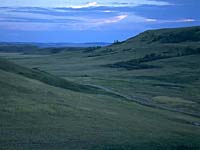
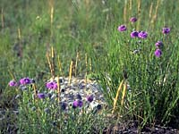
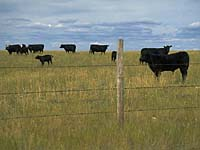

Climate
Landscape
Soil
Vegetation
Wildlife
Human Use
|
 |
|
Climate:
| Total annual precipitation (mm) |
352 |
| Annual snowfall (cm) |
101 |
| Water deficit (mm) |
524 |
| Mean July temperature (C) |
+18.9 |
| Mean January temperature (C) |
-12.6 |

The climate is dry to very dry and moderately cool to warm. The
region is subject to occasional severe droughts. Grasslands National Park (shown left) contains a large section of undisturbed prairie.
| |
Landscape:

The landscape is level to rolling plains.
In hummocky terrain, potholes collect water and marshes are formed.
|
There are sand dunes in the Great Sand Hills area.
|
![[ V F T ]](../../media/stuff/vft_spin.gif)
GPS: 50d 12.78m N, 108d 57.74m W, 2291 feet
01 August 96, 5:30 pm, Fuji Velvia 50, F16 1/100s
GPS: 49d 24.62m N, 105d 52.27m W, 3125 feet
30 July 96, 9:30 am, Fuji Velvia 50, F16 1/15-180s
GPS: 49d 23.08m N, 108d 29.84m W, 2919 feet
05 August 96, 2:10 pm, Fuji Velvia 50, F16 1/60s
GPS: 49d 13.94m N, 104d 46.12m W, 2474 feet
18 July 96, 6:45 pm, Fuji Velvia 50, F8 1/125s
Soil:

The soil is of
glacial origin, dark topsoils which are thinner in drier areas.
|
Vegetation:

Most of the native vegetation has been lost to agriculture
and only remnants of native grassland remain. The vegetation
is sparse and low. Native grass species include mid and short
grasses. Salt tolerant grasses grow on saline soils. Sedges are
also present. Temperate deciduous forest extends into the grassland
along rivers. Willows, saskatoon, chokecherry, snowberry and wolf
willow shrubs occur in valleys. Pasture sage is the most common
herb and prairie sage is an abundant shrub.
|

There are numerous
species of prairie wildflowers that give colour to the grasslands.
On the driest sites, yellow cactus and prickly pear cactus are
plentiful. Cottonwood groves can be found in the sand hills.
|
Wildlife:
Potholes and marshes are important breeding areas for North American
waterfowl. The bobcat is rarely seen but frequents creeks and
river valleys. Various species of sparrows, eagles, hawks and
curlews nest in the grasslands. Ord's kangaroo rat, sage brush
vole, sage grouse and prairie rattlesnake occur at the northern
edge of their ranges in the southwest, along with prairie dogs,
which are found no where else in Canada. White-tailed deer, mule
deer, pronghorn antelope (shown Left), coyote,
rabbits and Richardson's ground squirrels are common in certain
areas of the region. Red fox, badger, long-tailed weasel, muskrat,
raccoon, mink and striped skunk are common. Ringnecked pheasants
are present along the Frenchman River.
|
Human Use:

Production of spring wheat and other cereal grains, free
range livestock grazing and seasonal hunting are the major
land uses. Flax seed and durum wheat are also grown. The grazing
capacity of the range land in the sandhills is lower than that
in the surrounding mixed grasslands.
|
|
|